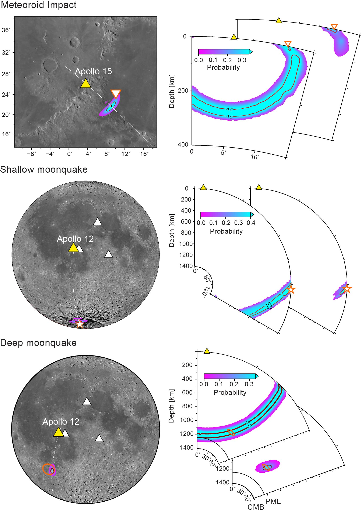
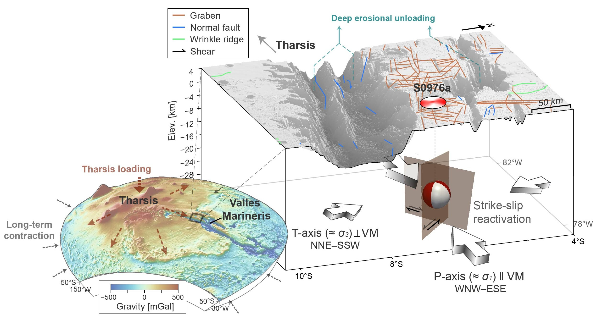
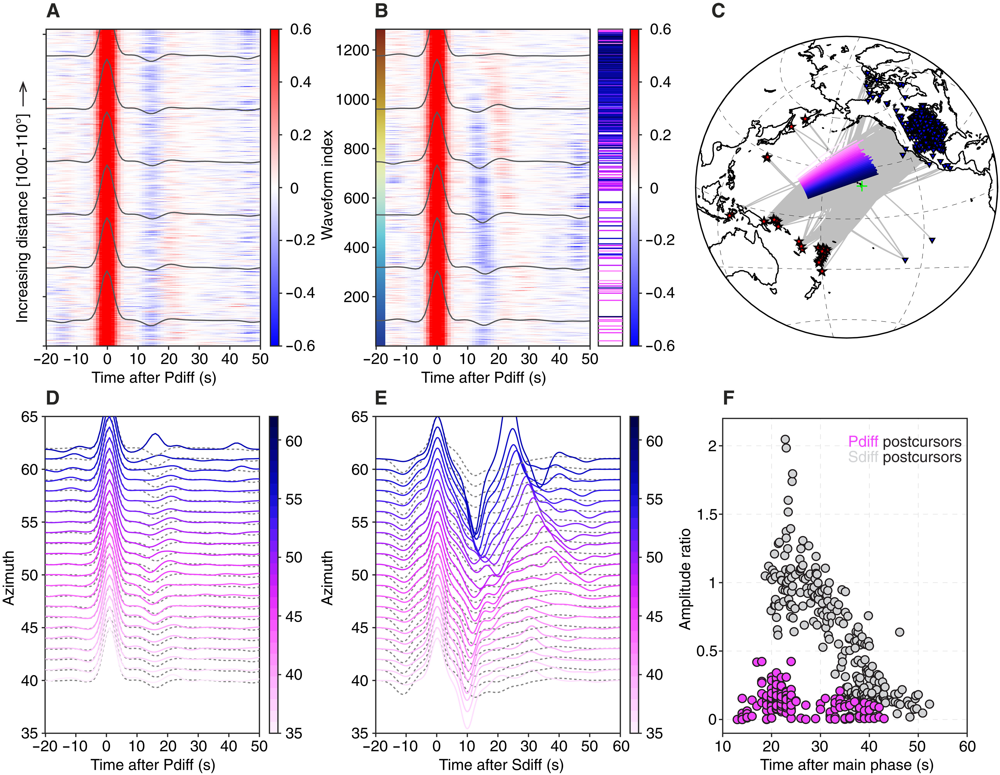
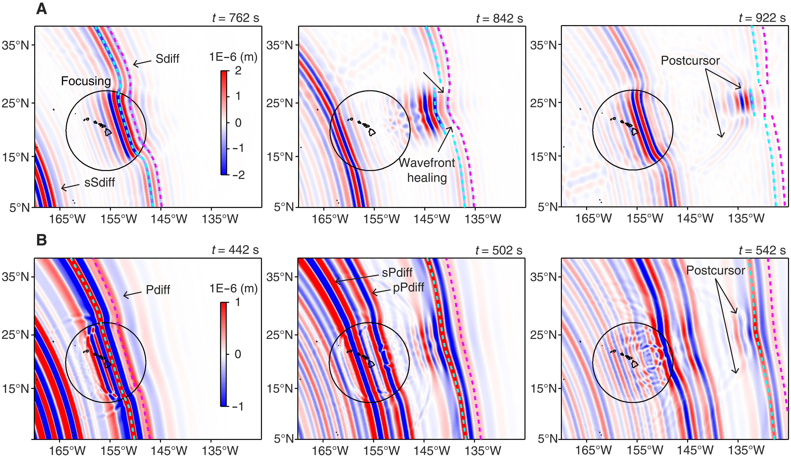
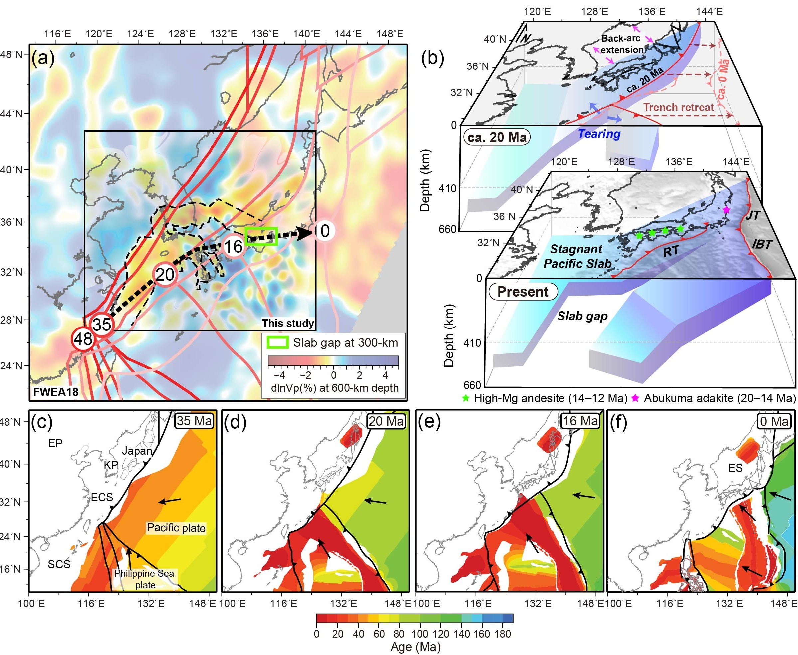

Selected work
Research stories.
Short, visual explanations of the scientific questions behind selected papers: what we measured, what we found, and why the result matters.

Geophysical Research Letters · 2026
Locating Moonquakes With Single-Station Seismology
The question
The Moon strongly scatters seismic waves, producing long, complex signals in which directional particle motion has traditionally been considered difficult to recover. Can those scattered waveforms still reveal where a moonquake came from — using only a single seismic station?
Abstract · short version
We use a detailed multi-time-frequency polarization analysis to follow subtle changes in P-wave particle motion through the scattered lunar wavefield. This recovers the direction from which the waves arrive, including back-azimuth and inclination, and combines it with S–P differential times to constrain event distance and depth. Apollo artificial impacts with known locations provide a benchmark, while natural moonquake locations remain consistent with earlier multi-station solutions.
Why it matters
The result shows that even strongly scattered lunar seismograms still retain measurable directional information. Recovering that hidden direction makes it possible to locate moonquakes with a single station — especially valuable for future lunar missions where a dense seismic network may not be available.

Nature Communications · Accepted
Active Crustal Straining and Fault Reactivation at Valles Marineris
The question
Mars is a cold, slowly evolving planet without plate tectonics, yet Valles Marineris preserves immense, billion-year-old fault systems. How can such an old, cold planet remain tectonically active today?
Research summary
The marsquake beneath Valles Marineris is confirmed as tectonic rather than surficial and is traced to deep, dominantly strike-slip faulting. The focal mechanism indicates compression roughly parallel to Valles Marineris and extension roughly perpendicular to it, a geometry consistent with reactivation of ancient canyon faults. This pattern can be understood within a broader stress field shaped by long-term planetary contraction and Tharsis-related loading, while local processes within the canyon may further modify the crustal stresses.
Why it matters
Valles Marineris, the Solar System’s largest canyon, is tectonically active today: a marsquake beneath it — confirmed tectonic, not surficial — was traced to deep fault slip, showing that billion-year-old faults can still rupture on Mars.



Science Advances · 2026
Seismic and Mineralogical Evidence for an Iron-Rich Mega Ultralow-Velocity Zone Beneath Hawai'i
The question
Ultralow-velocity zones (ULVZs) are unusual patches just above Earth's core where seismic waves slow down dramatically. The structure beneath Hawai'i is exceptionally large — a mega-ULVZ — and sits near the deep root of the Hawaiian mantle plume. What is this mysterious body made of: partially molten rock, chemically distinct material, or both?
Abstract · short version
We jointly analyse P and S waves that skim along Earth's core and interact with this deep structure. Comparing how strongly the two wave types slow down allows us to constrain its physical properties. The shear-to-compressional velocity-reduction ratio is about 1–1.3, and mineralogical modelling shows that this behaviour is consistent with solid rock enriched in iron-rich magnesiowüstite, rather than requiring a dominantly molten layer.
Why it matters
The result connects seismic waveforms to the composition of material at the core–mantle boundary. An iron-rich solid reservoir offers a physical link between deep chemical heterogeneity and the roots of mantle plumes, and suggests that different ULVZs may form through different processes.

Nature Communications · 2026
Continuous Nonthermal Slab Gap Formed by Progressive Tearing Beneath Northeast Asia
The question
Oceanic plates do not simply disappear after they sink into the mantle. Beneath Northeast Asia, the Pacific plate has descended and become stalled in the mantle transition zone, around 600 km deep. Seismic images reveal a long break cutting through this buried slab. Did hot mantle open this gap, or did the plate itself gradually tear apart?
Abstract · short version
We image a continuous ~1000-km-long arcuate gap in the stagnant Pacific slab within the mantle transition zone beneath Northeast Asia. Dense-array teleseismic tomography resolves sharp lateral boundaries around the gap, while 3-D waveform modelling independently requires those strong velocity contrasts. By jointly analysing P- and S-wave velocities with mantle-transition-zone thickness, we find that temperatures inside the gap are comparable to the ambient upper mantle and more than 200 °C below plume-like values. The shape of the gap follows the path of a migrating triple junction, consistent with progressive tearing during plate-boundary reorganisation.
Why it matters
The geometry of the buried Pacific plate records roughly 30 million years of progressive tearing during plate-boundary reorganisation. At the same time, the gap is not anomalously hot, challenging the common interpretation of slab gaps as windows for hot mantle upwelling. Together, these observations connect present-day seismic structure directly to the long-term evolution of the plate.

Journal of Geophysical Research: Solid Earth · 2018
Imaging of Lithospheric Structure Beneath Jeju Volcanic Island by Teleseismic Traveltime Tomography
The question
Jeju — home to UNESCO-listed volcanic landscapes — is a young volcanic island isolated from conventional plate boundaries. How did such intraplate volcanism arise, and does its deep magmatic system still leave a detectable signature beneath the island today?
Abstract · short version
Teleseismic traveltime tomography from a dense temporary broadband array images a prominent low-velocity anomaly beneath the central volcanic edifice at roughly 50–60 km depth, with shallower low-velocity branches extending upward through the lithosphere. The geometry is consistent with focused decompression melting below the lithosphere followed by complex magma transport and interaction at shallower levels.
Why it matters
The study provides a three-dimensional seismic view beneath an isolated young volcanic island, showing how localized volcanism can develop far from a plate boundary. The low-velocity structure preserves a deep seismic signature of the system that fed Jeju, while also constraining the transition between continental lithosphere and the underlying asthenosphere along the margin of Northeast Asia.